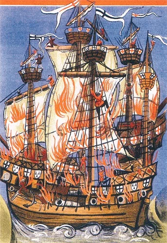

Генрих искал повода для начала войны против Франции. Основное препятствие, с которым он столкнулся, заключалось во временном объединении большинства других стран Европы в Кембрейскую Лигу. Пока лига не распадется, любая атака на Францию будет означать немедленную кару со стороны практически всей Европы. Стремление Генриха к войне более чем отвечало интересам Венеции, желающей взорвать Лигу до того, как она сама распадется. Несмотря на то, что Генрих в 1510 г. подтвердил мирные договоры своего отца с Францией и Шотландией, ситуация постепенно изменялась в пользу Венеции. Генрих, как мы уже говорили, укрепил свои отношения с Испанией, женившись 11 июня 1509 года на вдове своего брата Екатерине Арагонской. Он также оказывал давление на свою сестру Мери, чтобы она вышла замуж за Великого Герцога Бургундии Карла для создания династических связей с Нидерландами и Империей.
В феврале 1510 г. венецианцы, при содействии английского посла при Папском престоле кардинала Бэйнбриджа, заключили мир с папой. Юлий II обнаружил, что приглашение французов в Италию стало жестокой ошибкой. В течение 1510 и 1511 годов папа, при содействии швейцарцев и венецианцев, безуспешно пытался выдворить французские войска из Италии. Но они одни были недостаточно сильны, чтобы сделать это и постоянно предпринимали попытки расширить союз. Письмо от Сената Венеции своему послу в Риме иллюстрирует дипломатические маневры:
«Полагаю весьма желательным, чтобы папа через архиепископа Йоркского побудил решительность короля Англии, ознакомив его с ненасытностью французов и их дьявольскими деяниями.»
13 ноября 1511 года Англия присоединилась к очередной (но далеко не последней) Священной Лиге, первоначально составленной из Испании, Венеции и Папской области под эгидой папы Юлия II. Генрих также подписал договор со своим тестем Фердинандом Арагонским, пообещав напасть на Францию до конца апреля 1512 года.
Для французов было выгодно сохранение мира с Англией, который дал бы им возможность сконцентрироваться на Италии, но, осознав неизбежность войны, Франция предприняла шаги для самозащиты. Как всегда в таких случаях все начинается с разведки. Французский король попытался выяснить, где англичане планируют начать войну: в Нормандии или в Гиени. От этого зависело, куда заблаговременно послать лучшие силы и артиллерию.
Англичане между тем планировали атаку на Францию по двум направлениям: флот должен был сковать силы противника на северном побережье Франции, а экспедиционные силы – высадиться в Северной Испании, чтобы совместно с армией Фердинанда захватить Гиень . В 1512 г. произошел важный для нашего рассказа шаг: король назначил Эдварда Говарда на должность «Admiral of the Sea» на период «экспедиции, которая будет предпринята против французского короля в Гиени». Сэру Эдварду Говарду приказано было держать адмиральский флаг на борту Mary Rose, капитаном которой был Thomas Wyndham. Интересно, что в этом же королевском указе содержались также директивы, направленные против стычек между морскими пехотинцами и моряками, против игры в кости и в карты и т.д. Есть вещи, которые никогда не меняются…
Подготовка к войне была описана епископом Дурхама в письме к лорду Дарси:
«10 тысяч человек было послано в Гиень… Проведена подготовка для их высадки в Фонтарабии. Джон Стайл пишет, что их там должны встретить 10 тысяч человек, направленных королем Арагона, из которых половина – всадники. Сэр Эдвард Говард вышел в море с 5 тысячами человек. Французский король ведет активную подготовку к противостоянию с этими силами.»
Основным источником для нас в описании дальнейших событий будет служить венецианский историк Марино Сануто младший.
Первой задачей английского флота было достижение превосходства на море в районе Ла-Манша. Генрих отметил в письме кардиналу Бэйнбриджу, датированном 6 мая, что он «… имеет в море флот из 6000 человек, который уже захватил 12 бретонских и французских кораблей…» (Sanuto, xiv., 267) Венецианцы также активизировали действия флота… «Тридцать тяжело вооруженных кораблей удерживают Ла-Манш, так что ни один французский корабль не осмеливается покинуть порт.» (Sanuto, Diarii, XIV, 336)
Корабли с войсками, направляющиеся в Испанию, 3 июня отплыли вместе с флотом, действующим в качестве эскорта. Однако моряки не соблюдали дисциплины, каждый корабль действовал сам по себе. Пользуясь тем, что солдаты десанта страдали от морской болезни, они разграбили вспомогательные суда со всем их запасом провианта.
Экспедиция закончилась провалом; войска, испытывающие недостатки материального обеспечения, страдающие от болезней, падения дисциплины, вынуждены были в октябре вернуться домой. Выгадал от этой кампании только Фердинанд. Используя экспедицию английских войск как угрозу возможного вторжения в Гиень, сковывающую силы французов, он захватил Наварру, после чего объявил мир с Францией на этом фронте.
Определенного успеха достиг и Говард: возвращаясь после эскортных обязанностей, он «сжег французский порт Конке в Бретани… и захватил много кораблей с припасами и артиллерией, направленными французским королем для захвата Фландрии» (Sanuto xv., Diarii, 95)
После ремонта и пополнения запасов Говард отправился к Бресту. Ему удалось захватить французов врасплох на якорной стоянке и 10 августа навязать им беспощадное сражение, быть может первое морское сражение в Ла-Манше, в котором участвовали корабли с тяжелой артиллерией, стреляющей через порты в бортах. Французы перерубили якорные канаты и пытались бежать, но Говард на Мэри Роуз атаковал французский флагманский корабль, вынудив его выйти из боя, имея на борту 300 погибших и раненых, вероятно от одного залпа, срубившего его мачту. Апогей сражения наступил, когда «400-тонный корабль», вероятно, Peter Pomegranate, вывел из строя корабль, который различные хронисты называют то Carrack of Brest, то Queen, то Marie la Cordeliere, (водоизмещением от 400 до 1500 тонн) залпом из шести своих тяжелых орудий, оставив его тонуть. Regent развил эту атаку, взяв на абордаж карраку. Но как только корабли сцепились в абордажном бою, произошел взрыв, в результате которого погибло около двух тысяч человек. Со стороны англичан погиб и капитан сэр Томас Невет (Sir Thomas Knevet ), и сэр Джон Кэрью ( John Carew). Гибель кораблей описана в дневниках Сануто таким образом: когда французы стали проигрывать бой, один из моряков вошел с факелом в крюйт-камеру. (Похожую историю рассказывают о взрыве на борту San Salvador, во времена Непобедимой Армады в 1588 г. и неоднократно повторяют в более поздние времена. Не стал исключением и наш флот). Изображение описанного события приводится в начале поста (из эпической поэмы придворного поэта Germain de Brie).
Всех французов. которые избежали смерти, доставили королю. Еще один французский корабль, Admiralde, затонул. Французский флот отступил в Брест, а англичане в течение двух последующих дней захватили или уничтожили еще 32 французских судна, а также подняли очень ценные якоря, которые французы оставили, отступая в панике. Победоносный флот отплыл в Дартмут и Саутгемптон для ремонта.
Продолжим историю в следующий раз.